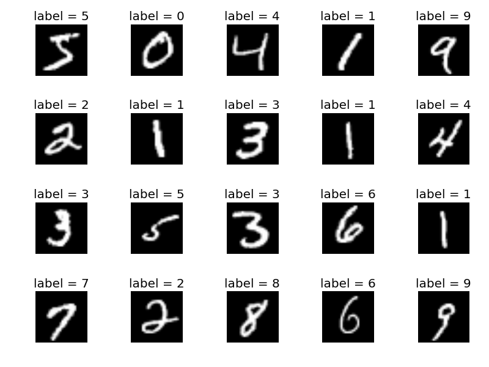
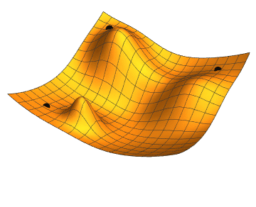

On a fateful night on 9th October, I decided to make my deep learning fundamentals clear by trying to build a neural network from scratch (not IN scratch, that's a totally different ballgame which I am not built for). I went through different resources, doomscrolled and slept that day and forgot about the project for some weeks.
I finally started working on it on 17th. The first step is to decide on our network architecture. For this project, I am going to make a simple neural network with a single hidden layer. 784 neurons in the input layer → 10 neurons in the hidden layer → 10 neurons in the output layer. Obviously, to check how good our neural network is, we need a dataset to train it on and for this project, I will be using the most cliche one, which is the MNIST digit recognition dataset.
(For those familiar with the MNIST dataset, feel free to completely skip over this part.)
Imagine you want to teach a computer to recognize handwritten digits, just like humans do. You show it thousands of handwritten examples of the numbers 0 to 9, and tell it which number each image represents. That's literally what the MNIST dataset is. It contains 70,000 images of handwritten digits, commonly used to learn and practise machine learning and neural networks. Each image is represented as a 28 × 28 grid of pixels. 28 × 28 = 784, WHICH IS EXACTLY WHY I HAVE 784 NEURONS IN MY INPUT LAYER. In a typical MNIST image, 0 means black pixel, 255 means white pixel and values between 0 and 255 mean different shades of grey. So the computer receives 784 numbers instead of a picture it understands visually.

There are 3 steps to training this neural network, which I am gonna try my best to explain to you like you're 5.
1. Forward propagation
In this step, we basically try to run each image through our neural network and compute the output. Each neuron calculates the weighted sum of the outputs from all neurons connected to it in the previous layer, and then adds a bias. Then we apply an activation function to the obtained weighted sum (this step is necessary since our network is just gonna be a fancy linear regression otherwise). There are many types of activation functions like Sigmoid, ReLU, Tanh, Softmax. For our network, we will be using ReLU for our first layer and Softmax for our second layer (since we want our output to be a probability and softmax gives an output between 0 and 1, it is our best option for the output layer).
def forward_prop(W1,b1,W2,b2,X):
Z1=W1.dot(X)+b1
A1=ReLU(Z1)
Z2=W2.dot(A1)+b2
A2=softmax(Z2)
return Z1,A1,Z2,A22. Backpropagation
Now we check how much our prediction deviated from the actual label and go backwards in our network to correct our weights and biases based on how much each of them contributed to the error. This sounds simple but the math behind it is depressing to say the least.
def back_prop(Z1, A1, Z2, A2, W2, X, Y):
m = Y.size
one_hot_Y = one_hot(Y)
dZ2 = A2 - one_hot_Y
dW2 = 1 / m * dZ2.dot(A1.T)
dZ1 = W2.T.dot(dZ2) * ReLU_deriv(Z1)
dW1 = 1 / m * dZ1.dot(X.T)
db2 = (1 / m) * np.sum(dZ2, axis=1, keepdims=True)
db1 = (1 / m) * np.sum(dZ1, axis=1, keepdims=True)
return dW1, db1, dW2, db23. Gradient descent: actually teaching our network
So we've run our images through the network, made predictions, compared them with the actual labels, and calculated how much each weight and bias contributed to the error. Now we actually use all this information to improve our predictions through gradient descent.
Think of gradient descent as trying to find the bottom of a valley while blindfolded. You can't see where the bottom is, but you can figure out which direction slopes downward and take a step in that direction. You repeat this process until you get closer to the bottom.
In our neural network, the loss function tells us how wrong our predictions are, while the gradients calculated during backpropagation tell us how changing our weights and biases affects that loss.
Gradient descent uses these gradients to update our parameters:
new parameter = old parameter − learning rate × gradient
The learning rate, represented by alpha in my code, determines how big a step we take. If it's too large, we might overshoot the minimum. If it's too small, learning could take forever.
And this is exactly what our update_params() function does!
We subtract the scaled gradients from our weights and biases, hopefully making the network a little better at recognizing handwritten digits. We then repeat the process: forward propagation, backpropagation, and parameter updates.
Over many iterations, the network gradually adjusts its parameters to make better predictions.
And that's the basic idea behind training a neural network.
def update_params(W1,b1,W2,b2,dW1,db1,dW2,db2,alpha):
W1=W1-alpha*dW1
b1=b1-alpha*db1
W2=W2-alpha*dW2
b2=b2-alpha*db2
return W1,b1,W2,b2def gradient_descent(X,Y,iter,alpha):
W1,b1,W2,b2=init_params()
for i in range(iter):
Z1,A1,Z2,A2=forward_prop(W1,b1,W2,b2,X)
dW1,db1,dW2,db2=back_prop(Z1,A1,Z2,A2,W2,X,Y)
W1,b1,W2,b2=update_params(W1,b1,W2,b2,dW1,db1,dW2,db2,alpha)
if i%10==0:
print("Iteration: ",i)
print("Accuracy: ",get_accuracy(get_pred(A2),Y))
return W1,b1,W2,b2
After putting everything together and training the network, the accuracy went from roughly 8% to around 90% on the data I was evaluating. This is in fact a good sign.
I won't pretend that I understood every mathematical detail on the first attempt. Some of the derivations still took a fair bit of staring at the screen before they started making sense. But implementing the process myself made the overall picture much clearer.
And that's probably my biggest takeaway from this project: sometimes, the best way to understand an abstraction is to build a simplified version of it yourself.
The complete implementation is available in my Kaggle notebook, where you can go through the code in detail. Good night or have a good day (based on where you live).